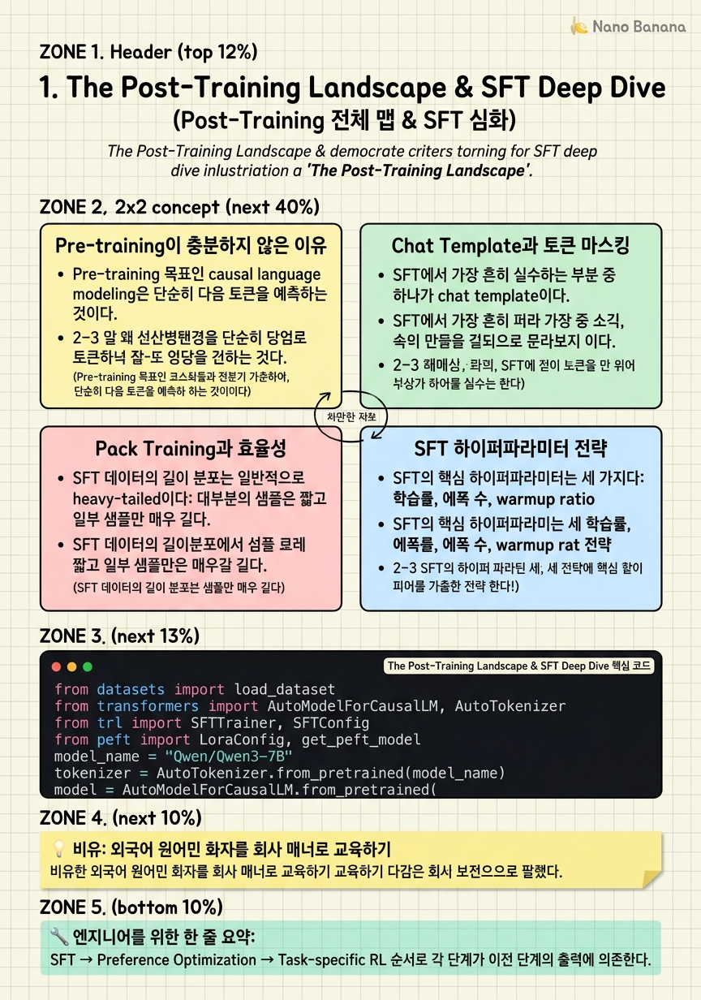

The Post-Training Landscape & SFT Deep Dive

🎯 학습 목표
- Post-training 스택 전체 그림을 설명하고 각 단계의 목적을 구분할 수 있다
- SFT에서 chat template이 왜 필수인지, 잘못 설정했을 때 어떤 문제가 생기는지 설명할 수 있다
- NLL loss를 response token에만 적용하는 이유와 구현 방법을 설명할 수 있다
- Packing의 장점과 attention mask 처리 방법을 설명할 수 있다
- SFT 하이퍼파라미터 선택 기준을 데이터 규모와 모델 크기에 맞게 제시할 수 있다
Pre-training은 방대한 인터넷 텍스트를 통해 모델에 세상 지식을 압축하는 과정이다. 하지만 raw pre-trained 모델은 다음 토큰을 예측하도록만 훈련되어 있어, 사람의 질문에 대답하거나 특정 형식의 출력을 내는 인터페이스를 갖추지 못했다. Post-training은 이 간극을 메우는 일련의 과정 전체를 지칭한다.
Post-training 스택은 보통 세 단계로 구성된다: (1) Supervised Fine-Tuning (SFT) — 사람이 작성한 고품질 instruction-response 쌍으로 모델이 원하는 포맷과 스타일을 학습한다. (2) Preference Optimization — RLHF, DPO, ORPO 등을 통해 모델이 더 선호되는 응답을 선택하도록 정렬한다. (3) Task-specific RL — GRPO, VAPO 등 RL 방법으로 수학적 추론, 코딩, 비디오 이해 등 특정 능력을 극대화한다.
SFT는 post-training의 출발점이자 foundation이다. SFT의 품질이 이후 alignment 단계의 상한선을 결정하기 때문에, 데이터 포맷·손실함수·하이퍼파라미터 설계를 정확히 이해하는 것이 중요하다. 이 챕터에서는 SFT의 핵심 메커니즘을 깊이 파고들어 이후 챕터들의 기반을 다진다.
핵심 내용
Pre-training이 충분하지 않은 이유
Pre-training 목표인 causal language modeling은 단순히 다음 토큰을 예측하는 것이다. 이 과정에서 모델은 방대한 지식을 습득하지만, 질문-응답 형식으로 사용자와 대화하는 방법을 배우지는 않는다. Raw GPT-2나 Llama base 모델을 직접 사용해보면 질문을 이어서 유사한 질문을 생성하거나, 문서를 계속 이어서 생성하는 경향이 있다.
SFT는 이런 모델에 인터페이스 레이어를 입힌다. 특정 instruction 형식으로 데이터를 구성하고 훈련함으로써, 모델은 '이런 형태의 입력이 오면 이런 형태의 응답을 생성해야 한다'는 패턴을 학습한다. 이 과정은 지식을 새로 쌓는 게 아니라 이미 가진 지식을 올바른 방식으로 표현하도록 '출력 분포를 재형성'하는 것이다.
중요한 함의가 있다: SFT로는 pre-training에 없는 지식을 만들어낼 수 없다. 사실이 아닌 내용을 SFT 데이터에 포함시키면 모델은 그 포맷을 학습할 뿐, 지식을 교정하지 않는다. 따라서 SFT 데이터는 모델이 이미 알고 있는 내용을 올바른 방식으로 표현하도록 설계되어야 한다.
Chat Template과 토큰 마스킹
SFT에서 가장 흔히 실수하는 부분 중 하나가 chat template이다. Chat template은 system, user, assistant 역할을 구분하는 특수 토큰 시퀀스다. Qwen3의 경우 <|im_start|>system\n...\n<|im_end|> 형식을 사용한다.
왜 중요한가? 모델은 추론 시 정확히 이 포맷으로 입력을 받기 때문에, 훈련 시 동일한 포맷을 사용하지 않으면 distribution mismatch가 발생한다. 실제로 chat template을 잘못 적용한 모델은 추론 시 instruction을 따르지 않거나, 응답 도중에 user 메시지를 생성하는 등의 이상 행동을 보인다.
토큰 마스킹은 SFT에서 핵심이다: loss는 assistant 응답 토큰에만 계산해야 한다. System과 user 토큰에 loss를 적용하면 모델이 '질문을 생성하는 것'도 학습하게 되어 비효율적이다. TRL의 SFTTrainer는 기본적으로 completion_only_loss=True 옵션을 통해 이를 처리한다.
| 역할 | Loss 적용 여부 |
|---|---|
| System | ✗ (마스킹) |
| User | ✗ (마스킹) |
| Assistant | ✓ (학습) |
Pack Training과 효율성
SFT 데이터의 길이 분포는 일반적으로 heavy-tailed이다: 대부분의 샘플은 짧고 일부 샘플만 매우 길다. 각 샘플을 개별적으로 패딩하면 짧은 샘플들의 배치에 패딩 토큰이 가득 차 GPU 연산이 낭비된다.
Packing은 여러 샘플을 하나의 시퀀스로 이어 붙여 최대 시퀀스 길이를 꽉 채우는 방식이다. 예를 들어 max_length=4096인 경우, 256 토큰 샘플 16개를 하나로 묶는다. GPU 활용률이 크게 높아지고 throughput이 2-3배 향상된다.
주의사항이 있다: 서로 다른 샘플이 이어붙여진 위치에서 attention이 cross-sample로 흐르면 안 된다. TRL 최신 버전은 sequence-level attention mask를 자동으로 처리한다 (dataset_kwargs={"skip_prepare_dataset": False} 설정 필요). Flash Attention 2는 이 variable-length attention을 효율적으로 처리한다.
SFT 하이퍼파라미터 전략
SFT의 핵심 하이퍼파라미터는 세 가지다: 학습률, 에폭 수, warmup ratio.
학습률: Pre-training보다 1-2 오더 낮게 설정한다. Qwen3-7B 기준으로 1e-5~5e-5가 일반적이다. 학습률이 너무 높으면 catastrophic forgetting이 발생해 pre-training에서 습득한 일반 능력이 손실된다. Cosine schedule이 linear보다 대부분 더 좋은 성능을 보인다.
에폭 수: 데이터 규모에 반비례한다. 100K 이하 샘플에서는 2-5 epoch, 1M 이상에서는 1-2 epoch이 전형적이다. Overfitting 징후는 evaluation loss의 증가와 diversity 감소로 확인할 수 있다.
Warmup ratio: 전체 스텝의 3-10%를 warmup으로 사용한다. Warmup 없이 시작하면 초기 학습률 스파이크로 인한 loss spike가 발생할 수 있다.
| 데이터 규모 | 권장 LR | 권장 에폭 | Batch Size |
|---|---|---|---|
| < 10K | 1e-5 | 3-5 | 32-64 |
| 10K-100K | 2e-5 | 2-3 | 64-128 |
| > 100K | 5e-5 | 1-2 | 128-256 |
LoRA vs Full Fine-tuning 선택 기준
Full fine-tuning은 모든 파라미터를 업데이트한다. 최고 성능을 내지만 메모리와 연산 비용이 크다. 7B 모델을 bf16으로 full fine-tuning하면 단순 weight 저장만 14GB, optimizer state(AdamW) 추가 28GB, gradient 14GB로 총 56GB 이상이 필요하다.
LoRA는 weight matrix의 저랭크 분해를 통해 소수의 파라미터만 훈련한다. \(W' = W_0 + BA\) 형태로, \(B \in \mathbb{R}^{d \times r}\), \(A \in \mathbb{R}^{r \times k}\), rank \(r \ll \min(d,k)\). 일반적으로 전체 파라미터의 0.1-1%만 훈련하므로 메모리가 크게 줄어든다.
LLM SFT에서는 특히 고품질 데이터 소량(< 50K)으로 특정 도메인 적응 시 LoRA가 효과적이다. 다만 해외 빅테크 production 환경에서는 full fine-tuning이 여전히 선호된다 — LoRA merge 후 작은 표현 저하가 발생하기 때문이다. rank=64, alpha=128 설정이 good default로 알려져 있다.
💡 비유로 이해하기
Pre-training을 마친 LLM은 마치 방대한 책을 모두 읽은 원어민 화자와 같다. 영어, 수학, 법률, 의학 — 모든 것을 알고 있다. 하지만 이 사람에게 '고객 상담사로 근무해달라'고 부탁하면 문제가 생긴다. 고객의 질문을 들으면 비슷한 질문들을 나열하거나, 관련 없는 이야기를 늘어놓을 수 있다.
SFT는 이 원어민 화자에게 '비즈니스 매너 교육'을 시키는 과정이다. '고객이 X를 물으면 Y 형식으로 답해야 한다'는 규칙을 직접 보여주고 연습시킨다. 중요한 점은 이 교육이 사람의 언어 능력을 향상시키는 게 아니라, 그 능력을 특정 상황에서 올바르게 발휘하는 방법을 가르치는 것이다.
Chat template은 이 과정에서 '회사 유니폼'에 해당한다. 근무 시에는 반드시 유니폼을 입어야 하고, 교육(SFT) 중에도 유니폼을 입고 연습해야 실제 근무(추론)에서 혼동이 없다. 유니폼 없이 교육을 시키고 근무 시 유니폼을 입히면 어색하게 행동하는 것처럼, chat template 불일치는 모델 성능 저하로 직결된다.
💻 코드 예시
Qwen3-7B 모델을 TRL의 SFTTrainer로 fine-tuning하는 예시다. Chat template 적용, response-only loss 마스킹, packing, LoRA 설정을 모두 포함한다.
from datasets import load_dataset
from transformers import AutoModelForCausalLM, AutoTokenizer
from trl import SFTTrainer, SFTConfig
from peft import LoraConfig, get_peft_model
model_name = "Qwen/Qwen3-7B"
tokenizer = AutoTokenizer.from_pretrained(model_name)
model = AutoModelForCausalLM.from_pretrained(
model_name, torch_dtype="bfloat16", device_map="auto"
)
# LoRA config: attention + ffn 모두 커버
lora_config = LoraConfig(
r=64,
lora_alpha=128,
target_modules=["q_proj", "k_proj", "v_proj", "o_proj",
"gate_proj", "up_proj", "down_proj"],
lora_dropout=0.05,
bias="none",
task_type="CAUSAL_LM",
)
model = get_peft_model(model, lora_config)
dataset = load_dataset("your_dataset", split="train")
def format_chat(example):
# Qwen3 chat template 적용
messages = [
{"role": "system", "content": example["system"]},
{"role": "user", "content": example["instruction"]},
{"role": "assistant", "content": example["response"]},
]
return {"text": tokenizer.apply_chat_template(
messages, tokenize=False, add_generation_prompt=False
)}
dataset = dataset.map(format_chat)
training_args = SFTConfig(
output_dir="./qwen3-sft",
max_seq_length=4096,
packing=True, # sequence packing for efficiency
per_device_train_batch_size=4,
gradient_accumulation_steps=8,
learning_rate=2e-5,
lr_scheduler_type="cosine",
warmup_ratio=0.05,
num_train_epochs=2,
bf16=True,
logging_steps=10,
save_steps=500,
)
trainer = SFTTrainer(
model=model,
tokenizer=tokenizer,
args=training_args,
train_dataset=dataset,
)
trainer.train()lora_config에서 r=64는 rank, lora_alpha=128는 scaling factor (\(\alpha / r = 2.0\)). target_modules에 attention뿐 아니라 FFN(gate/up/down_proj)까지 포함하면 성능이 향상된다. packing=True는 여러 샘플을 하나의 4096 토큰 시퀀스로 묶어 GPU 활용률을 높인다. apply_chat_template은 Qwen3의 <|im_start|>/<|im_end|> 포맷을 자동으로 처리한다. SFTTrainer는 내부적으로 assistant 토큰에만 loss를 계산하는 마스킹을 처리한다.
🏭 현업에서의 평가
✅ 시니어가 보는 것
- Chat template 불일치 문제를 실제로 경험하고 디버깅한 경험
- Response-only loss masking 구현을 코드 레벨에서 설명할 수 있는 능력
- 데이터 규모에 따른 하이퍼파라미터 스케일링 직관
- Catastrophic forgetting을 모니터링하는 방법론
- LoRA rank/alpha 선택의 근거를 제시할 수 있는 능력
⚠️ 레드 플래그
- Chat template 없이 단순 text concatenation으로 SFT를 구현한 경우
- Evaluation set 없이 training loss만으로 overfitting을 판단하는 경우
- 모든 상황에 같은 하이퍼파라미터를 사용하는 경우 (데이터 규모, 모델 크기 무관)
- Response-only loss와 full sequence loss의 차이를 설명하지 못하는 경우
🎤 예상 인터뷰 질문
- SFT에서 system/user 토큰에도 loss를 적용하면 어떤 문제가 생기나요? 실제로 경험한 적 있나요?
- Packing 사용 시 서로 다른 샘플 사이의 attention이 흐르지 않도록 어떻게 처리하나요?
- SFT 후 모델이 이전 능력(예: 수학 풀이)을 잃었을 때 어떻게 접근하시겠나요?
✨ 핵심 요약
Post-training은 3단계 스택
SFT → Preference Optimization → Task-specific RL 순서로 각 단계가 이전 단계의 출력에 의존한다.
SFT = 지식 습득이 아닌 표현 재형성
SFT로는 pre-training에 없는 지식을 만들 수 없다. 이미 아는 것을 올바른 포맷으로 표현하도록 출력 분포를 재형성하는 것이다.
Chat template은 유니폼이다
훈련과 추론에서 동일한 chat template을 사용해야 한다. 불일치는 distribution mismatch로 성능 저하를 유발한다.
Response-only loss가 핵심
Assistant 응답 토큰에만 loss를 계산해야 한다. System/user 토큰에 loss를 적용하면 불필요한 학습 방향이 생긴다.
Packing으로 GPU 활용률 향상
다중 샘플을 하나의 시퀀스로 묶어 padding 낭비를 제거한다. Cross-sample attention 방지를 위한 attention mask 처리는 필수다.
LR은 pre-training보다 1-2 오더 낮게
높은 학습률은 catastrophic forgetting을 유발한다. 데이터 규모가 클수록 LR을 높이고, 작을수록 낮춘다.
LoRA r=64, alpha=128이 good default
Attention과 FFN 모두에 적용하고 scaling factor α/r = 2.0으로 시작한다.
Overfitting은 eval loss로 모니터링
Training loss 감소만으로 과적합을 판단하지 말 것. 별도 eval set에서의 perplexity와 downstream task 성능을 함께 추적해야 한다.